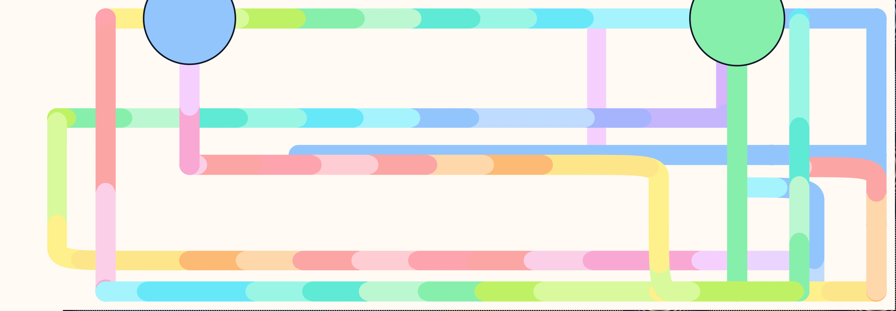

The project changed because people walked up and talked to us.
This page captures the evolution of the Micro:bit Exploration project during Luddy TechFest on Saturday, April 11, 2026. Visitors tested things, noticed rough spots, pitched upgrades, and helped shape what the code became by the end of the day.
Arvin, our 8-year-old helper, wrote down update ideas as people shared them. One of the biggest ideas from that live feedback loop was the Zombie game. The git history shows the idea day on April 11, 2026, and then the committed zombie page landing later on April 13, 2026.
Evolution Timeline
Updates shaped by TechFest feedback
The sequence below reflects the kinds of changes we made during Saturday, April 11, 2026 as people interacted with the stations and suggested new directions.
01
The activity got clearer
7:29 AM commit · index.html
Visitors wanted the home page to better explain what participants were actually doing, so we expanded the activity framing with three new cards: noticing what could work better, imagining the next fix or feature, and building the next version.
D / E / F cardsBetter explanationMore welcoming entry pointVisitor-driven wording
02
The drawing canvas became bigger and more immersive
11:02 AM commit · microbit_drawing_canvas.html
People wanted the drawing experience to feel larger, so the motion canvas was widened by changing the shell to full width and tightening the workspace padding. That moved the sketch station closer to a public-screen experience instead of a small framed widget.
Width: 100%Full-screen feelProjector-friendlyShared canvas energy
03
The character world turned into a game space
11:24 AM and 11:47 AM commits · microbit_luddy_characters.html
Feedback pushed the character page from a motion demo into a playful arena. Git shows the addition of shooter-angle logic, projectile ownership, hit detection, explosions, respawn and invulnerability timing, and then a follow-up conversion of the scene into a full-screen beach world with the old graph framing removed.
ExplosionsAiming controlsBeach world
04
The controls were remapped in response to how people were playing
11:47 AM and 11:50 AM commits · microbit_drawing_canvas.html and microbit_luddy_characters.html
Another round of same-day edits changed control mappings to better match how people were using the devices. On the drawing canvas, the g movement codes were remapped. On the character page, button presses and shooting directions were tuned again in a quick follow-up pass.
Control remapFast iterationFollow-up polish
05
The printout and QR handout were added mid-morning
9:51 AM commit · activity_printout.html and index.html
Git shows a new print-ready handout landing during the day. That addition gave the station a page with activity copy, participation framing, a site link, and a QR code so people could carry the experience away from the table.
Printout pageQR codeTake-home link
06
Arvin's zombie idea started on April 11 and became code later
Idea captured on April 11 · committed on April 13 at 9:05 AM
The git record does not show a zombie-game file on Saturday, April 11, 2026. What it does show is a fast-moving day of visitor-driven changes that set the stage for the next leap. Arvin's idea belonged to that April 11 evolution, and the actual microbit_zombie_outbreak.html page was committed later on Sunday, April 13, 2026.
These details come directly from the repository history for Saturday, April 11, 2026. They help anchor the story in the actual sequence of commits.
7:19 AM · “fixed index and ensemble”
This was the broad morning stabilization pass. It touched index.html, string_ensemble_baton_nodes.html, control_worksheet.html, microbit_code_monitor.html, and microbit_drawing_canvas.html, plus prompt.md. In other words, the project structure and supporting pages were still actively being shaped at the start of the day.
7:23 AM · “update card radius”
A tiny follow-up commit changed string_ensemble_baton_nodes.html. Even that small change matters here because it shows the same pattern as the rest of the day: make something, look again, tighten it, keep moving.
7:29 AM · “added more cards to index”
This commit added the new D, E, and F cards to the home page. Those cards are especially important for the story because they explicitly turned visitor feedback, debugging, and invention into part of the activity itself.
9:51 AM · “minor updates to language”
This commit created activity_printout.html and adjusted language in index.html. That tells us the exhibit was not only being coded for the screen, but also being interpreted for participants through printed copy and take-home framing.
11:02 AM · “make canvas wide”
The drawing page changed in a very specific way: the shell went to full width and the workspace padding got smaller. That lines up directly with the live request to make the canvas fill more of the screen.
11:24 AM · “changed chacters to explode and shoot with directions”
This was one of the biggest April 11 commits. It added aiming direction, projectile ownership, collision checks, explosion effects, respawn timing, and invulnerability logic to microbit_luddy_characters.html. The character page stopped being just a movement demo and started behaving like a game.
11:47 AM and 11:50 AM · “change canvas controls”
These two quick commits adjusted control mappings and refined the public-screen behavior of the pages. The same time block also transformed the character world into a beach environment, showing how visual design and controls were being tuned together in response to what people were noticing.
After The Event
What changed between the last Saturday commit and Monday morning
This comparison looks at eeaf3b3 from Saturday, April 11, 2026 at 11:50:25 AM EDT and the Monday morning commits 082a792 at 9:05:03 AM EDT and 8571c8b at 9:50:45 AM EDT on April 13, 2026.
The biggest jump was the zombie page landing in code
The Monday 9:05 AM commit added microbit_zombie_outbreak.html as a brand-new page with about 1,944 inserted lines. That is the clearest evidence that a lot of the post-event thinking and local work had been carried forward and then committed later.
New file addedZombie game committedApril 13, 9:05 AM
The existing pages also moved beyond the 11:50 snapshot
Between eeaf3b3 and Monday morning, the home page gained a zombie card and later an evolution card, the drawing page picked up a much larger pastel palette plus a wider pen-size range, and the character beach got scoring with top-score and total-pop tracking.
Home page expandedSketch Pad tunedBeach scoring added
Monday 9:50 AM was about turning it into a connected site
The 9:50 AM commit added the site-wide zombie nav link, introduced the new techfest_evolution.html page, and styled the nav so worksheet, monitor, and evolution read like a different class of destination from the main play pages.
Site navigationEvolution page addedUtility-link styling
What git can and cannot prove
The repository can prove which committed snapshots existed at those exact times. It cannot show the full local work that happened before the laptop was back and synced. The Monday commits strongly suggest that several ideas from TechFest kept being developed locally after the last Saturday commit and were only captured in git later.
Committed snapshotsLocal work gapPost-event follow-through
From The Room
Artifacts from TechFest
These images help show both sides of the project: the room where kids interacted with the work, and one of the visual outcomes produced by the Sketch Pad.
Kids testing the station in the room
This photo makes the public-making story feel real: children are standing in front of the live display, reacting to the screen together, which is exactly the context that generated so many of the comments and ideas on April 11.

Etch-a-sketch example from the Sketch Pad
This saved sketch shows what the Motion Sketch Pad could produce after the canvas and controls were pushed further. It is a nice artifact of the visual side of the exhibit, not just the code side.
Who Shaped It
The code evolved because the room did
These were not abstract feature requests. They came from children, families, helpers, and visitors reacting to what they saw on the screen and imagining what it could become next.
Visitors
Visitors tested the station in the most honest possible way: by trying it immediately and saying what would make it more fun, more readable, bigger, clearer, or more game-like.
Arvin
Arvin, our 8-year-old helper, helped capture the update ideas during the day and contributed the zombie-game idea that later became the Zombie Outbreak page committed on April 13, 2026.
The Build Process
The project became a living studio. Observe what people do, listen to what they suggest, make the change, and let the next person react to the new version.